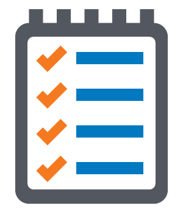

Easier Tech

Qué buscamos:
Qué hacemos:
Cómo se sostienen estos proyectos:
- Construir un mundo mejor, aportando nuestro esfuerzo y los recursos a nuestro alcance para demostrar la viabilidad de modelos "empresariales" centrados en las personas en lugar de en el beneficio económico.
Qué hacemos:
- Apoyamos a las personas que de forma desinteresada dedican su tiempo y su energía a ayudar a los demás
- Apostamos por la educación como pilar fundamental para construir un futuro más humano
- Tratamos de generar puestos de trabajo de calidad en respuesta a la precarización del empleo
- Ayudamos a pequeñas organizaciones y asociaciones que apuestan por los principios de la economía social a sacar partido de las opciones que ofrecen las nuevas tecnologías para mejorar su sostenibilidad y asegurar su autosuficiencia
Cómo se sostienen estos proyectos:
- Prestando servicios de software a medianas y grandes empresas
- Implantando herramientas y soluciones de código abierto
- Integración continua, automatización de tests, eCommerce...
- Destinando al menos el 50% de la facturación a proyectos de contenido social
- Y el 50% restante a pagar nuestros salarios y costes de operación
- Dedicando una parte de las horas de trabajo a impulsar iniciativas sin ánimo de lucro